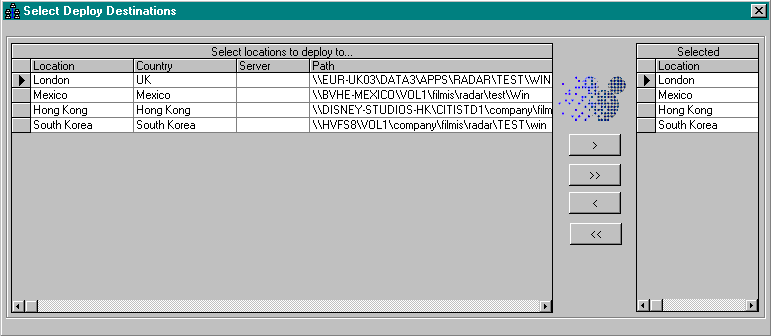

SuggestionToTechServices: Send a suggestion to Tech Services Team
UpdateStudioDirectory: self explanatory
Commissary: Used by all Disney Studios Personnel to view commissary menu.
NWConnect: Netware connector ActiveX control.
GenericUpdater: Update software from a remote location using Netware NWConnect
GenericDeployer: Update software to a remote location using Netware NWConnect, VB application.
SendMail: Send email control to be used from Visual Basic applications, ActiveX
Technologies
C/C++AssemblyVisual BasicMicrosoft AccessVisual StudioASPActive Server PagesWindows DevelopmentDLL DevelopmentDatabases: MS AccessMSSQLEmail Delivery through MAPI APIWin32Mac OSIISInternet Information Server
Work Performed
Designed and developed multithreaded network connector in C++ for Novell and Windows networks. Developed Macintosh version later.
Developed software updater in C++ that used the network connector. User base of 10,000 worldwide. Developed Macintosh version.
Designed and developed software deployment application in Visual Basic which helped other development teams.
Completed and improved food menu system for Marriott food management at the Disney Commissary. Used Visual Basic and MS Access. It printed on paper and output to a web page.
Converted CGI and Visual Basic applications to internet applications.
Developed Management Information System, Projects Management System and numerous database driven internet applications. Using IIS, ASP, MS SQL, Stored Procedures, MS Access, Java and VB Scripts and COM. Applications had to run in PC, Macintosh and UNIX platforms with MS Internet Explorer and Netscape in several versions. Designed graphics.
Conceived and developed Mail ActiveX control in Visual C++ used by internet applications and other programming teams.
Conceived and developed ActiveX control that extended Visual Basic by intercepting Windows messages and providing Events for custom processing of those messages.
Maintained and added features to other applications and tools. Collaborated in Y2K project, analyzed software and promoted necessary changes. Designed and Administered databases in MS SQL and MS Access.
Archive showcase
Disney — 10 source files, 2 documents, 2 notes, 14 images from the professional archive.
Project root
TEXTREADME.txtREADME.txt
WEB APPS:
- CorpPurch: Request purchases
- DialIn_OutRequest: Request dial in/out access
- HRTS: Request hardware
- IPAging: IP Accounting
- IPListing: IP Listings
- ISTechDBAccess: Request database access
- PeopleSoftLoginRequest: Request PeopleSoft access
- SuggestionToTechServices: Send a suggestion to Tech Services Team
- UpdateStudioDirectory: self explanatory
- Commisary: Used by all Disney Studios Personel to view commisary menu.
- Commisary daily menu
LIST OF APPS:
- NWConnect: Netware connector ActiveX control.
- GenericUpdater: Update software from a remote location using Netware NWConnect, can be used from VB apps, wrote test VB app for it.
- GenericDeployer: Update sofware to a remote location using Netware NWConnect, VB application.
- SendMail: Send email control to be used from Visual Basic applications, ActiveX, Developed VB app and test tools for it.
LIST OF TECHNOLOGIES:
- C/C++
- Assembly
- Visual Basic
- Microsoft ACESS
- Visual Studio
- ASP, Active Server Pages
- Windows Development
- DLL Development
- Databases: MS Access, MSSQL
- Email Delivery through MAPI API
- Win32
- Mac OS
- IIS, Internet Information Server
- MSSql, Microsoft SQL Server
WORK PERFORMED:
- Designed and developed multithreaded network connector in C++ for Novell and Windows networks. Developed Macintosh version later.
- Developed software updater in C++ that used the network connector. User base of 10,000 worldwide. Developed Macintosh version.
- Designed and developed software deployment application in Visual Basic which helped other development teams.
- Completed and improved food menu system for Marriot food management at the Disney Commissary. Used Visual Basic and MS Access. It printed on paper and output to a web page.
- Converted CGI and Visual Basic applications to internet applications.
- Developed Management Information System, Projects Management System and numerous database driven internet applications. Using IIS, ASP, MS SQL, - Stored Procedures, MS Access, Java and VB Scripts and COM. Applications had to run in PC, Macintosh and UNIX platforms with MS Internet Explorer and Netscape in several versions. Designed graphics.
- Conceived and developed Mail ActiveX control in Visual C++ used by internet applications and other programming teams.
- Conceived and developed ActiveX control that extended Visual Basic by intercepting Windows messages and providing Events for custom processing of those messages.
- Maintained and added features to other applications and tools.
- Collaborated in Y2K project, analyzed software and promoted necessary changes.
- Designed and Administered databases in MS SQL and MS Access.
WebApps
CODEPurchReq.sqlWebApps/PurchReq.sql
/* Microsoft SQL Server - Scripting */
/* Server: FIS-WEB */
/* Database: PurchReq */
/* Creation Date 12/3/1998 12:58:08 PM */
/****** Object: User KGuerra Script Date: 12/3/1998 12:58:09 PM ******/
if not exists (select * from sysusers where name = 'KGuerra' and uid < 16382)
EXEC sp_adduser 'KGuerra', 'KGuerra', 'public'
GO
/****** Object: User PurchReq Script Date: 12/3/1998 12:58:09 PM ******/
if not exists (select * from sysusers where name = 'PurchReq' and uid < 16382)
EXEC sp_adduser 'PurchReq', 'PurchReq', 'public'
GO
/****** Object: User PurchReqAdmin Script Date: 12/3/1998 12:58:09 PM ******/
if not exists (select * from sysusers where name = 'PurchReqAdmin' and uid < 16382)
EXEC sp_adduser 'PurchReqAdmin', 'PurchReqAdmin', 'public'
GO
GRANT CREATE TABLE TO PurchReqAdmin
GO
/****** Object: Stored Procedure dbo.sp_UpdateTables Script Date: 12/3/1998 12:58:09 PM ******/
if exists (select * from sysobjects where id = object_id('dbo.sp_UpdateTables') and sysstat & 0xf = 4)
drop procedure dbo.sp_UpdateTables
GO
/****** Object: View dbo.qryPurchReqDetail Script Date: 12/3/1998 12:58:09 PM ******/
if exists (select * from sysobjects where id = object_id('dbo.qryPurchReqDetail') and sysstat & 0xf = 2)
drop view dbo.qryPurchReqDetail
GO
/****** Object: View dbo.qryPurchReqResult Script Date: 12/3/1998 12:58:09 PM ******/
if exists (select * from sysobjects where id = object_id('dbo.qryPurchReqResult') and sysstat & 0xf = 2)
drop view dbo.qryPurchReqResult
GO
/****** Object: Table PurchReqAdmin.tblPurchReq Script Date: 12/3/1998 12:58:09 PM ******/
if exists (select * from sysobjects where id = object_id('PurchReqAdmin.tblPurchReq') and sysstat & 0xf = 3)
drop table PurchReqAdmin.tblPurchReq
GO
/****** Object: Table PurchReqAdmin.tblPurchReqInput Script Date: 12/3/1998 12:58:09 PM ******/
if exists (select * from sysobjects where id = object_id('PurchReqAdmin.tblPurchReqInput') and sysstat & 0xf = 3)
drop table PurchReqAdmin.tblPurchReqInput
GO
/****** Object: Table PurchReqAdmin.tblPurchReq Script Date: 12/3/1998 12:58:09 PM ******/
CREATE TABLE PurchReqAdmin.tblPurchReq (
PONo varchar (25) NULL ,
ReqNo varchar (25) NULL ,
BuyerName varchar (100) NULL ,
VendorName varchar (100) NULL ,
ClientName varchar (100) NULL ,
DeliverToName varchar (100) NULL ,
POType varchar (25) NULL ,
EntryDate smalldatetime NULL ,
DueDate smalldatetime NULL ,
ExpirationDate smalldatetime NULL ,
OrigNo1 varchar (10) NULL ,
DeptNo1 varchar (10) NULL ,
OrigNo2 varchar (10) NULL ,
DeptNo2 varchar (10) NULL ,
OrigNo3 varchar (10) NULL ,
DeptNo3 varchar (10) NULL
)
GO
CREATE INDEX idxPurchReq ON PurchReqAdmin.tblPurchReq(VendorName, ClientName)
GO
CREATE UNIQUE CLUSTERED INDEX idxPurchReqPONo ON PurchReqAdmin.tblPurchReq(PONo)
GO
GRANT SELECT ON tblPurchReq TO PurchReq
GO
/****** Object: Table PurchReqAdmin.tblPurchReqInput Script Date: 12/3/1998 12:58:10 PM ******/
CREATE TABLE PurchReqAdmin.tblPurchReqInput (
PONo varchar (25) NULL ,
ReqNo varchar (25) NULL ,
BuyerName varchar (100) NULL ,
VendorName varchar (100) NULL ,
ClientName varchar (100) NULL ,
DeliverToName varchar (100) NULL ,
POType varchar (25) NULL ,
EntryDate smalldatetime NULL ,
DueDate smalldatetime NULL ,
ExpirationDate smalldatetime NULL ,
OrigNo1 varchar (10) NULL ,
DeptNo1 varchar (10) NULL ,
OrigNo2 varchar (10) NULL ,
DeptNo2 varchar (10) NULL ,
OrigNo3 varchar (10) NULL ,
DeptNo3 varchar (10) NULL
)
GO
GRANT SELECT ON tblPurchReqInput TO PurchReq
GO
/****** Object: View dbo.qryPurchReqDetail Script Date: 12/3/1998 12:58:10 PM ******/
CREATE VIEW qryPurchReqDetail AS
SELECT
PurchReqAdmin.tblPurchReq.BuyerName,
CONVERT(char(10), PurchReqAdmin.tblPurchReq.EntryDate, 101) AS 'EntryDate',
PurchReqAdmin.tblPurchReq.ReqNo,
PurchReqAdmin.tblPurchReq.ClientName,
PurchReqAdmin.tblPurchReq.DeliverToName,
PurchReqAdmin.tblPurchReq.OrigNo1,
PurchReqAdmin.tblPurchReq.DeptNo1,
PurchReqAdmin.tblPurchReq.OrigNo2,
PurchReqAdmin.tblPurchReq.DeptNo2,
PurchReqAdmin.tblPurchReq.OrigNo3,
PurchReqAdmin.tblPurchReq.DeptNo3,
PurchReqAdmin.tblPurchReq.VendorName,
PurchReqAdmin.tblPurchReq.PONo,
PurchReqAdmin.tblPurchReq.POType,
CONVERT(char(10), PurchReqAdmin.tblPurchReq.ExpirationDate, 101) AS 'ExpirationDate',
CONVERT(char(10), PurchReqAdmin.tblPurchReq.DueDate, 101) AS 'DueDate'
FROM PurchReqAdmin.tblPurchReq
GO
GRANT SELECT ON dbo.qryPurchReqDetail TO PurchReq
GO
/****** Object: View dbo.qryPurchReqResult Script Date: 12/3/1998 12:58:10 PM ******/
CREATE VIEW qryPurchReqResult AS
SELECT
PurchReqAdmin.tblPurchReq.ReqNo,
PurchReqAdmin.tblPurchReq.PONo,
PurchReqAdmin.tblPurchReq.VendorName,
PurchReqAdmin.tblPurchReq.ClientName,
CONVERT(char(10), PurchReqAdmin.tblPurchReq.DueDate, 101) AS 'DueDate'
FROM PurchReqAdmin.tblPurchReq
GO
GRANT SELECT ON dbo.qryPurchReqResult TO PurchReq
GO
/****** Object: Stored Procedure dbo.sp_UpdateTables Script Date: 12/3/1998 12:58:10 PM ******/
CREATE PROCEDURE sp_UpdateTables AS
DROP INDEX tblPurchReq.idxPurchReqPONo
DROP INDEX tblPurchReq.idxPurchReq
TRUNCATE TABLE tblPurchReq
EXECUTE sp_rename tblPurchReq, tblPurchReqTemp
EXECUTE sp_rename tblPurchReqInput, tblPurchReq
EXECUTE sp_rename tblPurchReqTemp, tblPurchReqInput
CREATE UNIQUE CLUSTERED INDEX idxPurchReqPONo
ON tblPurchReq (PONo)
CREATE INDEX idxPurchReq
ON tblPurchReq (VendorName, ClientName)
GO
GRANT EXECUTE ON dbo.sp_UpdateTables TO PurchReqAdmin
GO
Project root
PDFDeployer.pdfDeployer.pdf

AddManyForm.bmpAddManyForm.bmp
TEXTGeneric Updater.txtGeneric Updater.txt
This is a working INI file that has documentation built in.
Use the smaller version for better performance, or make a copy of this file
change its extension from txt to ini and strip the comments.
A comment starts with the ; character.
;###########################################################################################
; _________________________________________________________________________
;| SERVERS SECTION |
; ¯¯¯¯¯¯¯¯¯¯¯¯¯¯¯¯¯¯¯¯¯¯¯¯¯¯¯¯¯¯¯¯¯¯¯¯¯¯¯¯¯¯¯¯¯¯¯¯¯¯¯¯¯¯¯¯¯¯¯¯¯¯¯¯¯¯¯¯¯¯¯¯¯
;The server entries are divided by commas in 7 subsections as follow:
; a) Title, The name of the server that the user will see during update
; b) Path to Source files, \\ServerName\Volume(if applicable)\Path
; c) Novell Tree ( if not applicable put just a comma )
; d) Novell Context ( if not applicable put just a comma )
; e) User ID
; f) Password ( if there isn't a password, put a comma )
; g) Options, specify network type and order of connection (default is 0)
; The options are the following:
; 0) Novell (NDS, current credentials), Novell (Bindery), NT, Novell (NDS, credentials in INI file, PROMPT)
; 1) NT, Novell (NDS, current credentials), Novell (Bindery), Novell (NDS, credentials in INI file, PROMPT)
; 2) Novell (NDS, current credentials), Novell (Bindery), Novell (NDS, credentials in INI file, PROMPT)
; 3) NT only
; 4) Novell (Bindery), Novell (NDS, credentials in INI file, PROMPT)
; 5) Novell (NDS, credentials in INI file, PROMPT)
[Servers]
;_____________________________________________________________________________________________
;-------------------------------------------Servers-------------------------------------------
;¯¯¯¯¯¯¯¯¯¯¯¯¯¯¯¯¯¯¯¯¯¯¯¯¯¯¯¯¯¯¯¯¯¯¯¯¯¯¯¯¯¯¯¯¯¯¯¯¯¯¯¯¯¯¯¯¯¯¯¯¯¯¯¯¯¯¯¯¯¯¯¯¯¯¯¯¯¯¯¯¯¯¯¯¯¯¯¯¯¯¯¯¯
S0 = FIS_ORPHAN,\\FIS_ORPHAN\SYS\SUPPORT\EMS\PC_ap,DISNEY,Orphans.Studio.burbank.mptv.disney,UPDATER,,2
S1 = Kguerra01,\\Kguerra01\Test\EMS,,,UPDATER,,3
S2 = Dhartman02,\\Dhartman02\UPDATE\EMS,,,nt_tester,12345,1
S3 = FIS1,\\FIS1\test123,DISNEY,new_fis1.bvp.burbank.mptv.disney,testuser,12345,0
S4 = UK,\\EUR-UK03\DATA3,DISNEY,London.UK.TWDC.Disney,UPDATER,,0
;_____________________________________________________________________________________________
;---------------------------------------NDSCredentialsChange----------------------------------
;¯¯¯¯¯¯¯¯¯¯¯¯¯¯¯¯¯¯¯¯¯¯¯¯¯¯¯¯¯¯¯¯¯¯¯¯¯¯¯¯¯¯¯¯¯¯¯¯¯¯¯¯¯¯¯¯¯¯¯¯¯¯¯¯¯¯¯¯¯¯¯¯¯¯¯¯¯¯¯¯¯¯¯¯¯¯¯¯¯¯¯¯¯
; NDSCredentialsChange = 0=No, 1=Yes, 2=Prompt
NDSCredentialsChange = 1
;#############################################################################################
; _________________________________________________________________________
;| APPLICATION SECTION |
; ¯¯¯¯¯¯¯¯¯¯¯¯¯¯¯¯¯¯¯¯¯¯¯¯¯¯¯¯¯¯¯¯¯¯¯¯¯¯¯¯¯¯¯¯¯¯¯¯¯¯¯¯¯¯¯¯¯¯¯¯¯¯¯¯¯¯¯¯¯¯¯¯¯
[Application]
;_____________________________________________________________________________________________
;---------------------------------------LocalPath-(optional)----------------------------------
;¯¯¯¯¯¯¯¯¯¯¯¯¯¯¯¯¯¯¯¯¯¯¯¯¯¯¯¯¯¯¯¯¯¯¯¯¯¯¯¯¯¯¯¯¯¯¯¯¯¯¯¯¯¯¯¯¯¯¯¯¯¯¯¯¯¯¯¯¯¯¯¯¯¯¯¯¯¯¯¯¯¯¯¯¯¯¯¯¯¯¯¯¯
; LocalPath is optional, default is updater.exe directory.
LocalPath = c:\test\emsTest
;_____________________________________________________________________________________________
;---------------------------------------LaunchApp---------------------------------------------
;¯¯¯¯¯¯¯¯¯¯¯¯¯¯¯¯¯¯¯¯¯¯¯¯¯¯¯¯¯¯¯¯¯¯¯¯¯¯¯¯¯¯¯¯¯¯¯¯¯¯¯¯¯¯¯¯¯¯¯¯¯¯¯¯¯¯¯¯¯¯¯¯¯¯¯¯¯¯¯¯¯¯¯¯¯¯¯¯¯¯¯¯¯
; LauchApp is the name of the application to run after the updater has run.
; Include all command line arquments.
LaunchApp = runcalc.exe
;_____________________________________________________________________________________________
;---------------------------------------ApplicationName---------------------------------------
;¯¯¯¯¯¯¯¯¯¯¯¯¯¯¯¯¯¯¯¯¯¯¯¯¯¯¯¯¯¯¯¯¯¯¯¯¯¯¯¯¯¯¯¯¯¯¯¯¯¯¯¯¯¯¯¯¯¯¯¯¯¯¯¯¯¯¯¯¯¯¯¯¯¯¯¯¯¯¯¯¯¯¯¯¯¯¯¯¯¯¯¯¯
; ApplicationName is the name that the updater uses in it's status messages.
ApplicationName = EMS
;_____________________________________________________________________________________________
;---------------------------------------RegistrySection-(optional)----------------------------
;¯¯¯¯¯¯¯¯¯¯¯¯¯¯¯¯¯¯¯¯¯¯¯¯¯¯¯¯¯¯¯¯¯¯¯¯¯¯¯¯¯¯¯¯¯¯¯¯¯¯¯¯¯¯¯¯¯¯¯¯¯¯¯¯¯¯¯¯¯¯¯¯¯¯¯¯¯¯¯¯¯¯¯¯¯¯¯¯¯¯¯¯¯
; RegistrySection . This is the name you want the registry entries to be saved under.
; Default is ApplicationName
RegistrySection = EMS
;_____________________________________________________________________________________________
;---------------------------------------VersionFile-------------------------------------------
;¯¯¯¯¯¯¯¯¯¯¯¯¯¯¯¯¯¯¯¯¯¯¯¯¯¯¯¯¯¯¯¯¯¯¯¯¯¯¯¯¯¯¯¯¯¯¯¯¯¯¯¯¯¯¯¯¯¯¯¯¯¯¯¯¯¯¯¯¯¯¯¯¯¯¯¯¯¯¯¯¯¯¯¯¯¯¯¯¯¯¯¯¯
; Version File is the name of the file carrying the current version.
; This file is used to compare the dates in the local computer and the server.
VersionFile = VERSION
;@@@@@@@@@@@@@@@@@@@@@@@@@@@@@@@@@@@@@@@@@@@@@@@@@@@@@@@@@@@@@@@@@@@@@@@@@@@@@@@@@@@@@@@@@@@@@
; TRUE OR FALSE VALUES ARE COMPATIBLE WITH 1, 0 AND -1
; BUT USE ONLY TRUE OR FALSE VALUES FOR BETTER READABILITY
;_____________________________________________________________________________________________
;---------------------------------------AskToUpdate-------------------------------------------
;¯¯¯¯¯¯¯¯¯¯¯¯¯¯¯¯¯¯¯¯¯¯¯¯¯¯¯¯¯¯¯¯¯¯¯¯¯¯¯¯¯¯¯¯¯¯¯¯¯¯¯¯¯¯¯¯¯¯¯¯¯¯¯¯¯¯¯¯¯¯¯¯¯¯¯¯¯¯¯¯¯¯¯¯¯¯¯¯¯¯¯¯¯
; TRUE : The updater to offer a decision screen before updating.
; FALSE : The updater to just launch without user input.
AskToUpdate = false
;_____________________________________________________________________________________________
;---------------------------------------RunWithoutUpdate--------------------------------------
;¯¯¯¯¯¯¯¯¯¯¯¯¯¯¯¯¯¯¯¯¯¯¯¯¯¯¯¯¯¯¯¯¯¯¯¯¯¯¯¯¯¯¯¯¯¯¯¯¯¯¯¯¯¯¯¯¯¯¯¯¯¯¯¯¯¯¯¯¯¯¯¯¯¯¯¯¯¯¯¯¯¯¯¯¯¯¯¯¯¯¯¯¯
; TRUE : The updater will run the main app, even if the update didn't happen or had errors.
; FALSE : The updater will not run the app when it could not check the update or had errors.
RunWithoutUpdate = false
;_____________________________________________________________________________________________
;---------------------------------------CopyOnlyChangedFiles----------------------------------
;¯¯¯¯¯¯¯¯¯¯¯¯¯¯¯¯¯¯¯¯¯¯¯¯¯¯¯¯¯¯¯¯¯¯¯¯¯¯¯¯¯¯¯¯¯¯¯¯¯¯¯¯¯¯¯¯¯¯¯¯¯¯¯¯¯¯¯¯¯¯¯¯¯¯¯¯¯¯¯¯¯¯¯¯¯¯¯¯¯¯¯¯¯
; TRUE : Copies only files which have a different date stamp.
; FALSE : Copies all files.
CopyOnlyChangedFiles = false
;_____________________________________________________________________________________________
;---------------------------------------DeleteBackupFiles-------------------------------------
;¯¯¯¯¯¯¯¯¯¯¯¯¯¯¯¯¯¯¯¯¯¯¯¯¯¯¯¯¯¯¯¯¯¯¯¯¯¯¯¯¯¯¯¯¯¯¯¯¯¯¯¯¯¯¯¯¯¯¯¯¯¯¯¯¯¯¯¯¯¯¯¯¯¯¯¯¯¯¯¯¯¯¯¯¯¯¯¯¯¯¯¯¯
; TRUE : Deletes the backup directory the updater creates in you local computer.
; FALSE : Leaves the backup directory. Usefull in case new version of app has bugs.
DeleteBackupFiles = false
;_____________________________________________________________________________________________
;---------------------------------------------------------------------------------------------
;¯¯¯¯¯¯¯¯¯¯¯¯¯¯¯¯¯¯¯¯¯¯¯¯¯¯¯¯¯¯¯¯¯¯¯¯¯¯¯¯¯¯¯¯¯¯¯¯¯¯¯¯¯¯¯¯¯¯¯¯¯¯¯¯¯¯¯¯¯¯¯¯¯¯¯¯¯¯¯¯¯¯¯¯¯¯¯¯¯¯¯¯¯
; TRUE : Runs the updater in debug mode, carefull because it displays a lot of messages.
; FALSE : Runs the updater in normal mode, displays messages only when necessary.
Debug = false
;@@@@@@@@@@@@@@@@@@@@@@@@@@@@@@@@@@@@@@@@@@@@@@@@@@@@@@@@@@@@@@@@@@@@@@@@@@@@@@@@@@@@@@@@@@@@@
; Wait times are given in seconds
;_____________________________________________________________________________________________
;---------------------------------------AppWaitUptoDate---------------------------------------
;¯¯¯¯¯¯¯¯¯¯¯¯¯¯¯¯¯¯¯¯¯¯¯¯¯¯¯¯¯¯¯¯¯¯¯¯¯¯¯¯¯¯¯¯¯¯¯¯¯¯¯¯¯¯¯¯¯¯¯¯¯¯¯¯¯¯¯¯¯¯¯¯¯¯¯¯¯¯¯¯¯¯¯¯¯¯¯¯¯¯¯¯¯
AppWaitUptoDate = 1
;_____________________________________________________________________________________________
;---------------------------------------AppWaitUpdated----------------------------------------
;¯¯¯¯¯¯¯¯¯¯¯¯¯¯¯¯¯¯¯¯¯¯¯¯¯¯¯¯¯¯¯¯¯¯¯¯¯¯¯¯¯¯¯¯¯¯¯¯¯¯¯¯¯¯¯¯¯¯¯¯¯¯¯¯¯¯¯¯¯¯¯¯¯¯¯¯¯¯¯¯¯¯¯¯¯¯¯¯¯¯¯¯¯
;;given in seconds
AppWaitUpdated = 3
;_____________________________________________________________________________________________
;---------------------------------------TextWait----------------------------------------------
;¯¯¯¯¯¯¯¯¯¯¯¯¯¯¯¯¯¯¯¯¯¯¯¯¯¯¯¯¯¯¯¯¯¯¯¯¯¯¯¯¯¯¯¯¯¯¯¯¯¯¯¯¯¯¯¯¯¯¯¯¯¯¯¯¯¯¯¯¯¯¯¯¯¯¯¯¯¯¯¯¯¯¯¯¯¯¯¯¯¯¯¯¯
;given in seconds
TextWait = 20
;_____________________________________________________________________________________________
;please do not tinker with these values
ProgressBarMaxVal = 76
WindowTitleHeight = 24
WindowMaxHeight = 94
TextStartX = 70
TextStartY = 2
;¯¯¯¯¯¯¯¯¯¯¯¯¯¯¯¯¯¯¯¯¯¯¯¯¯¯¯¯¯¯¯¯¯¯¯¯¯¯¯¯¯¯¯¯¯¯¯¯¯¯¯¯¯¯¯¯¯¯¯¯¯¯¯¯¯¯¯¯¯¯¯¯¯¯¯¯¯¯¯¯¯¯¯¯¯¯¯¯¯¯¯¯¯
;_____________________________________________________________________________________________
;---------------------------------------------------------------------------------------------
;¯¯¯¯¯¯¯¯¯¯¯¯¯¯¯¯¯¯¯¯¯¯¯¯¯¯¯¯¯¯¯¯¯¯¯¯¯¯¯¯¯¯¯¯¯¯¯¯¯¯¯¯¯¯¯¯¯¯¯¯¯¯¯¯¯¯¯¯¯¯¯¯¯¯¯¯¯¯¯¯¯¯¯¯¯¯¯¯¯¯¯¯¯
;-<>_«»°±²³¯·¹º¼½¾